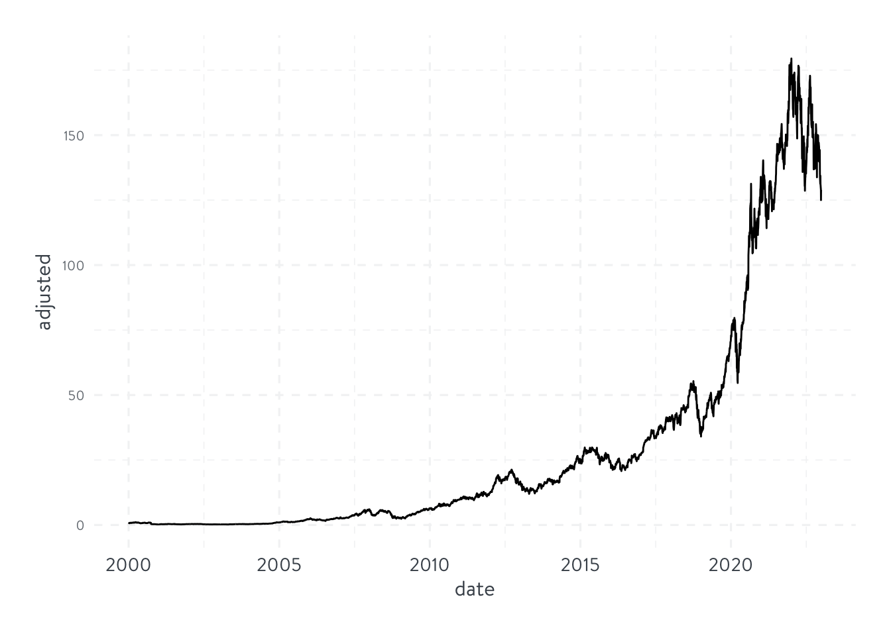
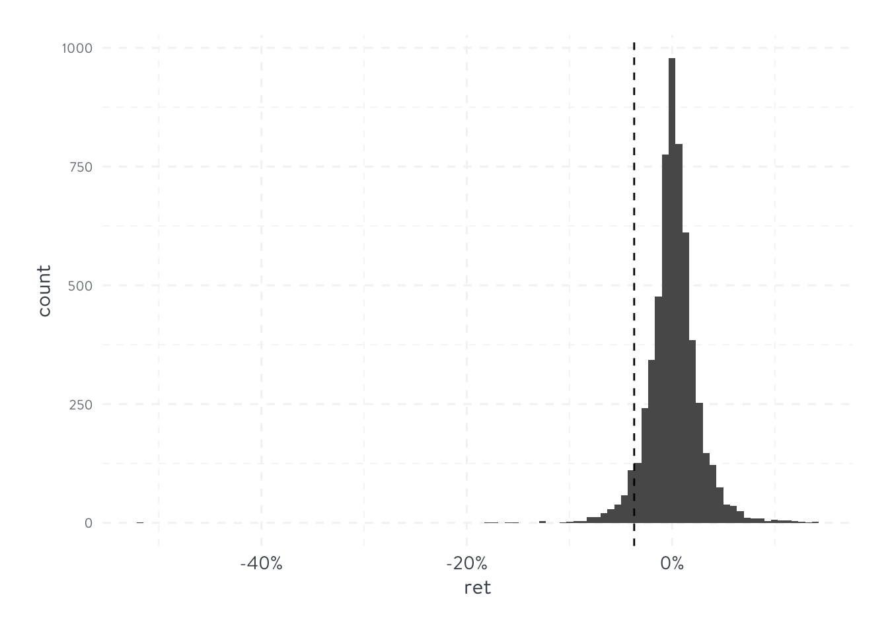
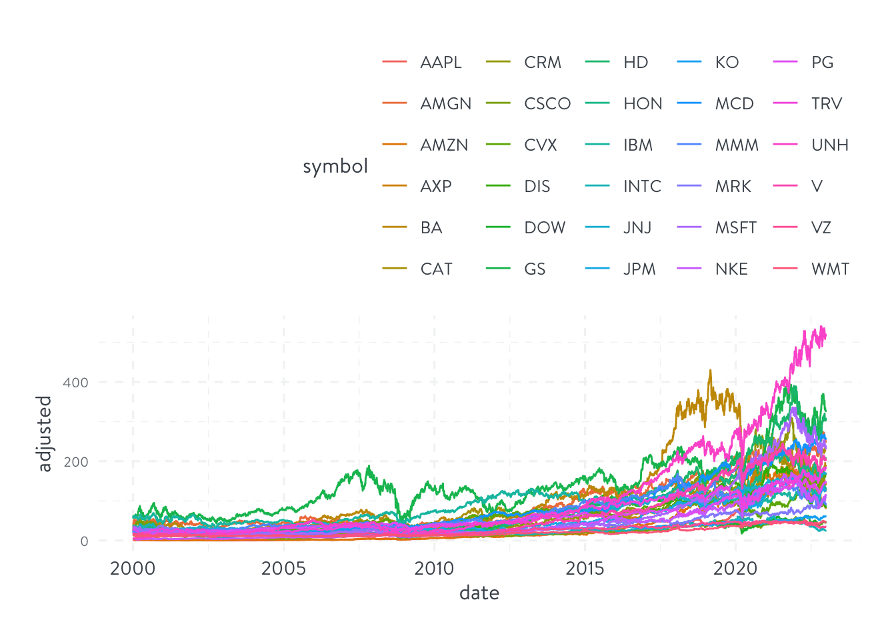
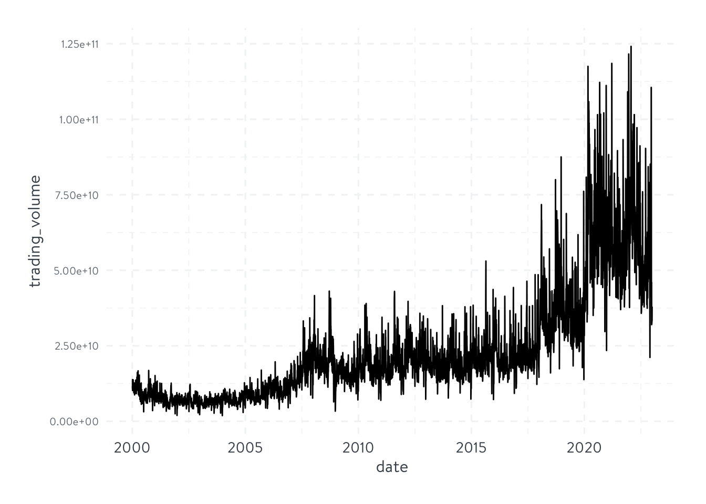
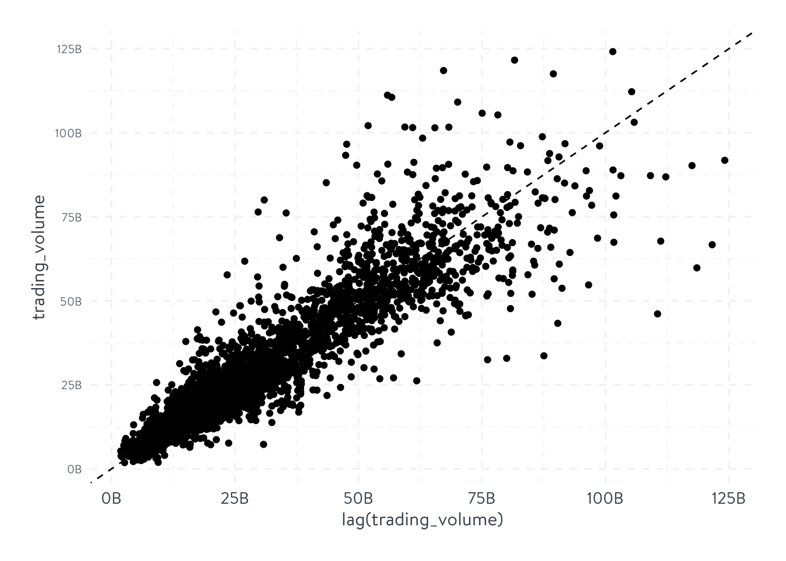
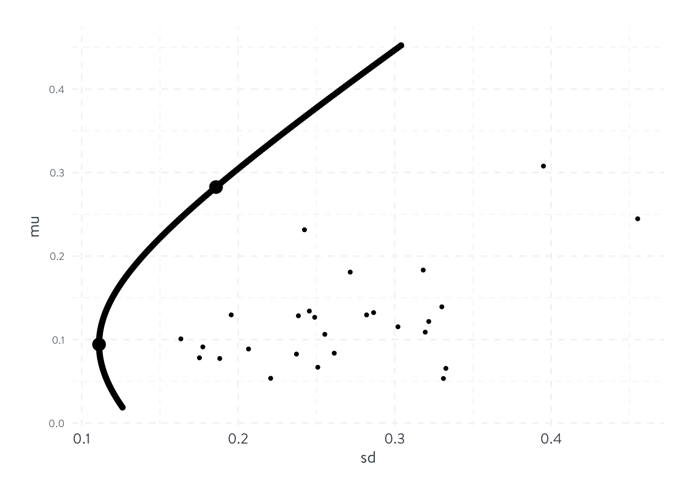

library(tidyverse)
library(tidyquant)
library(scales)
source(here::here('R/winsorize.R'))Introduction
Reviews
get familiar with
tidyquant- note that yahoo finance in Mainland China is unavailable. Must use full-mask VPN.
use
scalesto change the axes labelsderivation of MVP weights and MVE weights - not complicated, simply constrained linear programming.
once get two efficient weights, use the mutual fund separation theorem to get the whole frontier.
One stock
prices <- tq_get("AAPL", get = 'stock.prices', from = '2000-01-01', to = '2022-12-31')
prices# A tibble: 5,787 × 8
symbol date open high low close volume adjusted
<chr> <date> <dbl> <dbl> <dbl> <dbl> <dbl> <dbl>
1 AAPL 2000-01-03 0.936 1.00 0.908 0.999 535796800 0.845
2 AAPL 2000-01-04 0.967 0.988 0.903 0.915 512377600 0.774
3 AAPL 2000-01-05 0.926 0.987 0.920 0.929 778321600 0.785
4 AAPL 2000-01-06 0.948 0.955 0.848 0.848 767972800 0.717
5 AAPL 2000-01-07 0.862 0.902 0.853 0.888 460734400 0.751
6 AAPL 2000-01-10 0.911 0.913 0.846 0.873 505064000 0.738
7 AAPL 2000-01-11 0.857 0.887 0.808 0.828 441548800 0.700
8 AAPL 2000-01-12 0.848 0.853 0.772 0.778 976068800 0.658
9 AAPL 2000-01-13 0.844 0.882 0.826 0.864 1032684800 0.730
10 AAPL 2000-01-14 0.893 0.913 0.887 0.897 390376000 0.758
# ℹ 5,777 more rowsprices %>%
ggplot(aes(x = date, y = adjusted)) +
geom_line() +
theme_hierarchy()
returns <- prices %>%
arrange(date) %>%
mutate(ret = adjusted/lag(adjusted)-1) %>%
select(symbol, date, ret)
returns# A tibble: 5,787 × 3
symbol date ret
<chr> <date> <dbl>
1 AAPL 2000-01-03 NA
2 AAPL 2000-01-04 -0.0843
3 AAPL 2000-01-05 0.0146
4 AAPL 2000-01-06 -0.0865
5 AAPL 2000-01-07 0.0474
6 AAPL 2000-01-10 -0.0176
7 AAPL 2000-01-11 -0.0512
8 AAPL 2000-01-12 -0.0600
9 AAPL 2000-01-13 0.110
10 AAPL 2000-01-14 0.0381
# ℹ 5,777 more rowsreturns <- returns %>%
drop_na()quantile_05 <- returns %>%
pull(ret) %>%
quantile(probs = 0.05)
returns %>%
ggplot(aes(x = ret)) +
geom_histogram(bins = 100) +
geom_vline(xintercept = quantile_05, linetype = 'dashed') +
theme_hierarchy() +
scale_x_continuous(labels = percent)
returns %>%
summarise(
across(ret, list(
daily_mean = mean,
daily_sd = sd,
daily_min = min,
daily_max = max
))
)# A tibble: 1 × 4
ret_daily_mean ret_daily_sd ret_daily_min ret_daily_max
<dbl> <dbl> <dbl> <dbl>
1 0.00120 0.0251 -0.519 0.139Scale up
symbols <- tq_index('DOW') %>%
filter(company != 'US DOLLAR')Getting holdings for DOWsymbols# A tibble: 30 × 8
symbol company identifier sedol weight sector shares_held local_currency
<chr> <chr> <chr> <chr> <dbl> <chr> <dbl> <chr>
1 UNH UNITEDHEALT… 91324P102 2917… 0.0830 - 5430458 USD
2 GS GOLDMAN SAC… 38141G104 2407… 0.0776 - 5430458 USD
3 MSFT MICROSOFT C… 594918104 2588… 0.0765 - 5430458 USD
4 HD HOME DEPOT … 437076102 2434… 0.0558 - 5430458 USD
5 CAT CATERPILLAR… 149123101 2180… 0.0546 - 5430458 USD
6 AMGN AMGEN INC 031162100 2023… 0.0518 - 5430458 USD
7 V VISA INC CL… 92826C839 B2PZ… 0.0447 - 5430458 USD
8 CRM SALESFORCE … 79466L302 2310… 0.0427 - 5430458 USD
9 MCD MCDONALD S … 580135101 2550… 0.0413 - 5430458 USD
10 AXP AMERICAN EX… 025816109 2026… 0.0393 - 5430458 USD
# ℹ 20 more rowsindex_prices <- tq_get(symbols, get = 'stock.prices', from = '2000-01-01', to = '2022-12-31')index_prices %>%
ggplot(aes(x = date, y = adjusted, color = symbol)) +
geom_line() +
theme_hierarchy()
all_returns <- index_prices %>%
group_by(symbol) %>%
mutate(ret = adjusted/lag(adjusted) - 1) %>%
ungroup() %>%
select(symbol, date, ret) %>%
drop_na()
all_returns %>%
group_by(symbol) %>%
summarise(across(ret, list(
daily_mean = mean,
daily_sd = sd,
daily_min = min,
daily_max = max
),
.names = '{.fn}'))# A tibble: 30 × 5
symbol daily_mean daily_sd daily_min daily_max
<chr> <dbl> <dbl> <dbl> <dbl>
1 AAPL 0.00120 0.0251 -0.519 0.139
2 AMGN 0.000489 0.0197 -0.134 0.151
3 AMZN 0.00101 0.0319 -0.248 0.345
4 AXP 0.000518 0.0229 -0.176 0.219
5 BA 0.000595 0.0224 -0.238 0.243
6 CAT 0.000709 0.0204 -0.145 0.147
7 CRM 0.00110 0.0270 -0.271 0.260
8 CSCO 0.000317 0.0237 -0.162 0.244
9 CVX 0.000553 0.0176 -0.221 0.227
10 DIS 0.000418 0.0195 -0.184 0.160
# ℹ 20 more rowstrading_volume <- index_prices %>%
group_by(date) %>%
summarise(trading_volume = sum(volume*adjusted, na.rm = T))
trading_volume %>%
ggplot(aes(x = date, y = trading_volume)) +
geom_line() +
theme_hierarchy()
trading_volume %>%
ggplot(aes(lag(trading_volume), trading_volume)) +
geom_point() +
geom_abline(slope = 1, intercept = 0, linetype = 'dashed') +
theme_hierarchy() +
scale_x_continuous(labels = label_number(scale = 1e-9, suffix = 'B')) +
scale_y_continuous(labels = label_number(scale = 1e-9, suffix = 'B'))Warning: Removed 1 row containing missing values or values outside the scale range
(`geom_point()`).
Efficient frontier
from daily prices to monthly returns
index_prices <- index_prices %>%
group_by(symbol) %>%
mutate(n = n()) %>%
ungroup() %>%
filter(n == max(n)) %>%
select(-n)
returns <- index_prices %>%
mutate(month = floor_date(date, 'month')) %>%
group_by(symbol, month) %>%
summarise(price = last(adjusted), .groups = "drop_last") %>%
mutate(ret = price / lag(price) - 1) %>%
drop_na() %>%
select(-price) %>%
ungroup()returns_matrix <- returns %>%
pivot_wider(names_from = month, values_from = ret) %>%
select(-symbol) %>%
as.matrix()
sigma <- cov(t(returns_matrix))
mu <- rowMeans(returns_matrix)
N <- nrow(returns_matrix)
iota <- rep(1, N)
sigma_inv <- solve(sigma)
mvp_weights <- (sigma_inv %*% iota) / as.numeric(t(iota) %*% sigma_inv %*% iota)
tibble(
average_ret = as.numeric(t(mvp_weights) %*% mu),
volatility = as.numeric(sqrt(t(mvp_weights) %*% sigma %*% mvp_weights))
)# A tibble: 1 × 2
average_ret volatility
<dbl> <dbl>
1 0.00785 0.0321benchmark_multiple <- 3
mu_bar <- benchmark_multiple * t(mvp_weights) %*% mu
C <- as.numeric(t(iota) %*% sigma_inv %*% iota)
D <- as.numeric(t(iota) %*% sigma_inv %*% mu)
E <- as.numeric(t(mu) %*% sigma_inv %*% mu)
lambda_2 <- as.numeric((D-C*mu_bar)/(C*E-D^2))
lambda_1 <- as.numeric((E-D*mu_bar)/(C*E-D^2))
lambda_tilde <- as.numeric(2 * (mu_bar - D / C) / (E - D^2 / C))
efp_weights <- sigma_inv %*% (lambda_1*iota - lambda_2 * mu)
efp_weights [,1]
[1,] 0.27674939
[2,] 0.07066979
[3,] 0.10305897
[4,] -0.13182403
[5,] 0.05373920
[6,] 0.13727020
[7,] -0.04483209
[8,] 0.06117277
[9,] -0.19762625
[10,] -0.10175474
[11,] 0.04366304
[12,] 0.03721596
[13,] -0.11746026
[14,] -0.20998780
[15,] 0.25729517
[16,] 0.06836798
[17,] -0.01427798
[18,] 0.10320682
[19,] -0.20702926
[20,] -0.07082089
[21,] 0.08958688
[22,] 0.16973358
[23,] 0.17844221
[24,] 0.16610750
[25,] 0.34080457
[26,] -0.09349927
[27,] 0.03202856Although one can get the frontier by changing \(\mu\) , calculate the weights, and finally get the sd, a calculation efficient way is to use the mutual fund separation theorem (i.e., any portfolio on the frontier is a linear combination of two efficient portfolios).
length_year <- 12
a <- seq(from = -0.4, to = 1.9, by = 0.01)
res <- tibble(
a = a,
mu = map_dbl(a, \(x) t(mu)%*%((1-x)*mvp_weights + x*efp_weights)*length_year),
sd = map_dbl(a, \(x) sqrt(length_year * diag(t((1-x)*mvp_weights + x*efp_weights)%*%sigma%*%((1-x)*mvp_weights + x*efp_weights))))
)
res %>%
ggplot(aes(sd, mu)) +
geom_point() +
geom_point(data = res %>% filter(a %in% c(0, 1)), size = 4) +
geom_point(data = tibble(
mu = length_year * mu,
sd = sqrt(length_year * diag(sigma))
), size = 1) +
theme_hierarchy()